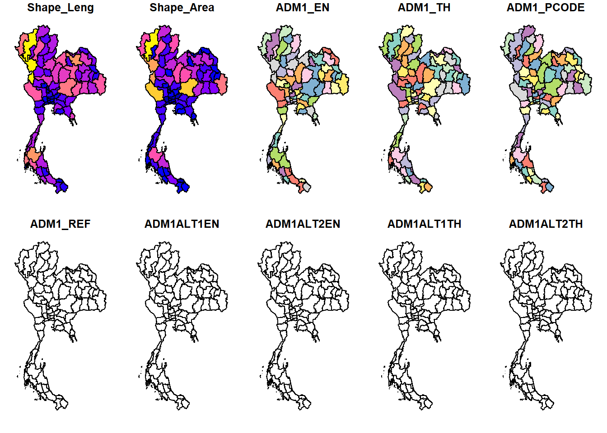
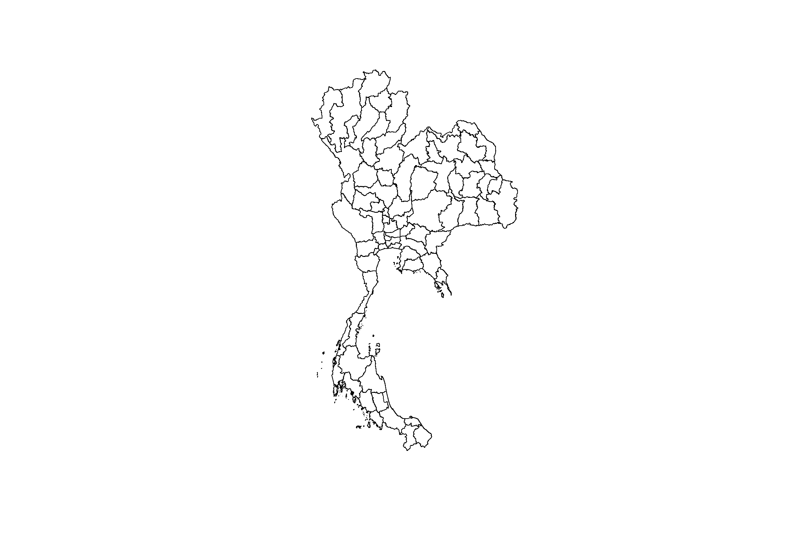
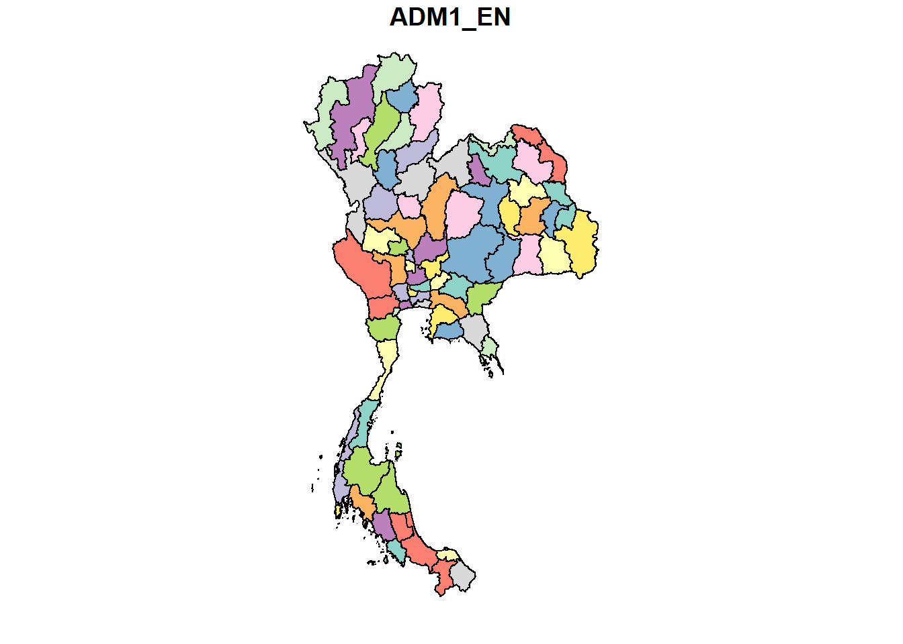
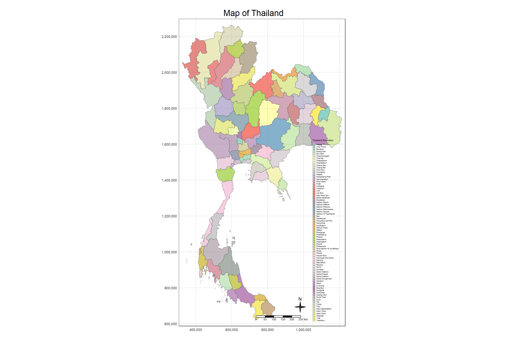
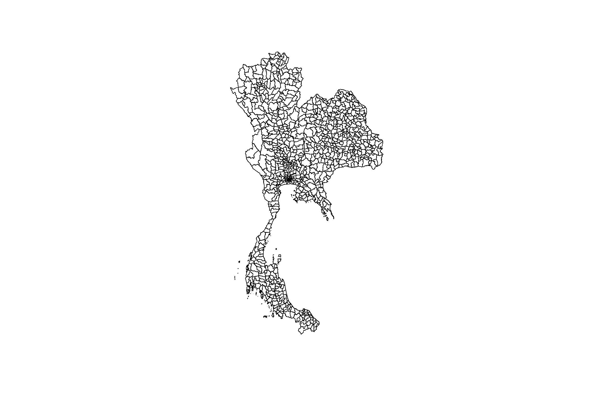
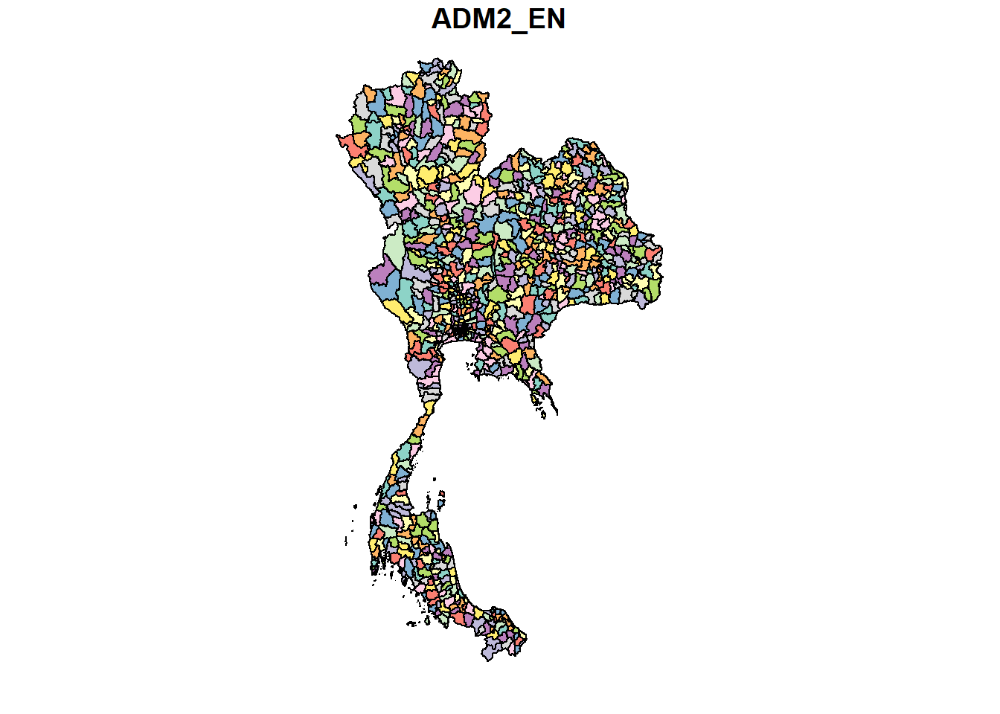

pacman::p_load(sf, spatstat, raster, tmap,
tidyverse, spNetwork, clock, lubridate)Take-home Exercise 1: Geospatial Analytics for Public Good
1 Overview: Case study on factors affecting road traffic accidents in the Bangkok Metropolitan Region (BMR)
According to the World Health Organization (WHO), road traffic accidents claim the lives of around 1.19 million people annually and leave 20 to 50 million others with non-fatal injuries. Vulnerable road users, such as pedestrians, cyclists, and motorcyclists, account for more than half of these fatalities.
Road traffic injuries are the leading cause of death for individuals aged 5 to 29. Additionally, two-thirds of road traffic fatalities occur among people of working age (18–59 years). Despite having only about 60% of the world’s vehicles, low- and middle-income countries account for 92% of road traffic fatalities.
Beyond the human toll, road accidents impose a significant economic burden on victims and their families due to medical costs and the loss of productivity from those who are killed or disabled. On a national level, these injuries cost countries around 3% of their gross domestic product (GDP).
Thailand has the most dangerous roads in Southeast Asia and ranks among the worst globally, with approximately 20,000 deaths from road accidents each year, averaging 56 deaths per day (WHO) and a million injuries each year, incurring an economic loss of 500,000 million baht.
Between 2014 and 2021, Thailand saw a rise in accident frequency, with 19% occurring on the national highways, which serve as the main public roads connecting regions, provinces, and key locations. Nationally, there is a 66% chance of encountering accident-prone areas, also known as ‘black spots.’ These are distributed as follows: 66% on straight road sections, 13% on curves, 6% at median points of cross intersections, 5% at T- or Y-intersections, 3% at cross intersections, and 2% on both bridges and steep slopes.
1.1 Objectives
The primary causes of road traffic accidents can be attributed to behavioural factors, such as: driver behaviour, performance, and environmental factors, like weather conditions and road design. While past studies using Spatial Point Patterns Analysis (SPPA) have explored these factors, they often overlook the impact of temporal factors, such as season or time of day.
The task is to identify factors influencing road traffic accidents in the Bangkok Metropolitan Region (BMR) using both spatial and spatio-temporal point patterns analysis. The objectives include visualizing spatio-temporal accident dynamics and conducting detailed spatial and temporal analyses using Network Spatial Point Patterns Analysis methods.
1.2 Datasets
Three basic data sets must be used for this exercise, they are:
Thailand Road Accident [2019-2022] on Kaggle
- This dataset provides comprehensive statistics on recorded road accidents in Thailand, spanning from approximately 2019 to 2022. The data was sourced from raw information provided by the Office of the Permanent Secretary, Ministry of Transport. The dataset encompasses various aspects of road accidents and aims to shed light on the trends and patterns within this critical area of concern, analysis of this data could be crucial in guiding road safety policies and measures
1.3 Setting Up
1.3.1 Setting up the R environment
In this exercise, seven R packages will be used, they are:
| Packages | Description |
|---|---|
| sf | A relatively new R package specially designed to import, manage and process vector-based geospatial data in R |
| spatstat | Which has a wide range of useful functions for point pattern analysis. In this hands-on exercise, it will be used to perform 1st- and 2nd-order spatial point patterns analysis and derive kernel density estimation (KDE) layer. |
| raster | Which reads, writes, manipulates, analyses and model of gridded spatial data (i.e. raster). In this exercise, it will be used to convert image output generate by spatstat into raster format |
| tmap | which provides functions for plotting cartographic quality static point patterns maps or interactive maps by using leaflet API. |
| tidyverse | a family of modern R packages specially designed to support data science, analysis and communication task including creating static statistical graphs |
| spNetwork | Which provides functions to perform Spatial Point Patterns Analysis such as kernel density estimation (KDE) and K-function on network. It also can be used to build spatial matrices (‘listw’ objects like in ‘spdep’ package) to conduct any kind of traditional spatial analysis with spatial weights based on reticular distances |
| clock | package providing a comprehensive set of tools for working with date-times |
| lubridate | package implements some graph layout algorithms that are not available in igraph or other packages |
The code chunk below is used to setup the R environment
1.3.2 Preparing the datasets
1.3.2.1 Importing the Aspatial data
The thai_road_accident_2019_2022 data set is csv file format, read_csv() of the readr package will be used to import thai_road_accident_2019_2022.csv as shown from the code chunk below. The output R Object is called rdacc as is a tibble data frame.
rdacc <- read_csv("data/rawdata/thai_road_accident_2019_2022.csv")Upon some initial observation of the data set, it is observed that there are missing / NA values in the latitude & longitude columns which will have to be removed. Following which there is also an incident_datetime column which will be utilised to identify the date and time occurrences of accidents. As such that column will be transformed for the date and time to be used for analysis.
The code chunk below also converts rdacc data frame into a simple feature data frame by using st_as_sf() of sf packages.
rdacc_sf <- rdacc %>%
filter(!is.na(longitude) & longitude != "",
!is.na(latitude) & latitude != "") %>%
mutate(Month_num = month(incident_datetime)) %>%
mutate(Month_fac = month(incident_datetime,
label = TRUE,
abbr = TRUE)) %>%
mutate(dayofweek = day(incident_datetime)) %>%
mutate(hour_of_day = hour(incident_datetime)) %>%
st_as_sf(coords = c("longitude", "latitude"),
crs = 4326) %>%
st_transform(crs = 32647)rdacc_sf_bmr <- rdacc_sf %>%
filter(province_en %in% c("Bangkok", "Samut Prakan", "Pathum Thani", "Nakhon Pathom", "Samut Sakhon", "Nonthaburi"))The simple feature data frame is saved into a physical file for usage. By doing so the need to repeat the steps above is not needed.
write_rds(rdacc_sf_bmr, "data/rds/rdacc_sf_bmr.rds")To retrieve file
rdacc_sf_bmr <- read_rds("data/rds/rdacc_sf_bmr.rds")st_geometry(rdacc_sf_bmr)Geometry set for 12986 features
Geometry type: POINT
Dimension: XY
Bounding box: xmin: 591277.5 ymin: 1486846 xmax: 710166.1 ymax: 1576520
Projected CRS: WGS 84 / UTM zone 47N
First 5 geometries:1.3.2.2 Importing Geospatial data
This dataset is in shp format
road_sf <- st_read(dsn = "data/rawdata",
layer = "hotosm_tha_roads_lines_shp")Reading layer `hotosm_tha_roads_lines_shp' from data source
`C:\zjho008\ISSS626-GAA\Take-home_Ex\Take-home_Ex01\data\rawdata'
using driver `ESRI Shapefile'
Simple feature collection with 2792590 features and 14 fields
Geometry type: MULTILINESTRING
Dimension: XY
Bounding box: xmin: 97.34457 ymin: 5.643645 xmax: 105.6528 ymax: 20.47168
CRS: NAUpon importing the OSM Export, it is observed from the results that the CRS field shows NA. Hence, we will set the CRS to WGS84 with the default EPSG code of 4326 using st_set_crs() of sf package.
road_sf <- st_set_crs(road_sf, 4326)Now, to check the CSR again by using the code chunk below.
st_crs(road_sf)Coordinate Reference System:
User input: EPSG:4326
wkt:
GEOGCRS["WGS 84",
ENSEMBLE["World Geodetic System 1984 ensemble",
MEMBER["World Geodetic System 1984 (Transit)"],
MEMBER["World Geodetic System 1984 (G730)"],
MEMBER["World Geodetic System 1984 (G873)"],
MEMBER["World Geodetic System 1984 (G1150)"],
MEMBER["World Geodetic System 1984 (G1674)"],
MEMBER["World Geodetic System 1984 (G1762)"],
MEMBER["World Geodetic System 1984 (G2139)"],
ELLIPSOID["WGS 84",6378137,298.257223563,
LENGTHUNIT["metre",1]],
ENSEMBLEACCURACY[2.0]],
PRIMEM["Greenwich",0,
ANGLEUNIT["degree",0.0174532925199433]],
CS[ellipsoidal,2],
AXIS["geodetic latitude (Lat)",north,
ORDER[1],
ANGLEUNIT["degree",0.0174532925199433]],
AXIS["geodetic longitude (Lon)",east,
ORDER[2],
ANGLEUNIT["degree",0.0174532925199433]],
USAGE[
SCOPE["Horizontal component of 3D system."],
AREA["World."],
BBOX[-90,-180,90,180]],
ID["EPSG",4326]]Following which, we can utilise st_transform() of sf package to re-project road_sf from one coordinate system to another coordinate system mathematically.
# renamed for understanding
road_sf_32647 <- st_transform(road_sf,
crs = 32647)Next, let us display the content of road_sf_32647 sf data frame as shown below.
st_geometry(road_sf_32647)Geometry set for 2792590 features
Geometry type: MULTILINESTRING
Dimension: XY
Bounding box: xmin: 325313.7 ymin: 624248.4 xmax: 1215576 ymax: 2263968
Projected CRS: WGS 84 / UTM zone 47N
First 5 geometries:st_crs(road_sf_32647)Coordinate Reference System:
User input: EPSG:32647
wkt:
PROJCRS["WGS 84 / UTM zone 47N",
BASEGEOGCRS["WGS 84",
ENSEMBLE["World Geodetic System 1984 ensemble",
MEMBER["World Geodetic System 1984 (Transit)"],
MEMBER["World Geodetic System 1984 (G730)"],
MEMBER["World Geodetic System 1984 (G873)"],
MEMBER["World Geodetic System 1984 (G1150)"],
MEMBER["World Geodetic System 1984 (G1674)"],
MEMBER["World Geodetic System 1984 (G1762)"],
MEMBER["World Geodetic System 1984 (G2139)"],
ELLIPSOID["WGS 84",6378137,298.257223563,
LENGTHUNIT["metre",1]],
ENSEMBLEACCURACY[2.0]],
PRIMEM["Greenwich",0,
ANGLEUNIT["degree",0.0174532925199433]],
ID["EPSG",4326]],
CONVERSION["UTM zone 47N",
METHOD["Transverse Mercator",
ID["EPSG",9807]],
PARAMETER["Latitude of natural origin",0,
ANGLEUNIT["degree",0.0174532925199433],
ID["EPSG",8801]],
PARAMETER["Longitude of natural origin",99,
ANGLEUNIT["degree",0.0174532925199433],
ID["EPSG",8802]],
PARAMETER["Scale factor at natural origin",0.9996,
SCALEUNIT["unity",1],
ID["EPSG",8805]],
PARAMETER["False easting",500000,
LENGTHUNIT["metre",1],
ID["EPSG",8806]],
PARAMETER["False northing",0,
LENGTHUNIT["metre",1],
ID["EPSG",8807]]],
CS[Cartesian,2],
AXIS["(E)",east,
ORDER[1],
LENGTHUNIT["metre",1]],
AXIS["(N)",north,
ORDER[2],
LENGTHUNIT["metre",1]],
USAGE[
SCOPE["Navigation and medium accuracy spatial referencing."],
AREA["Between 96°E and 102°E, northern hemisphere between equator and 84°N, onshore and offshore. China. Indonesia. Laos. Malaysia - West Malaysia. Mongolia. Myanmar (Burma). Russian Federation. Thailand."],
BBOX[0,96,84,102]],
ID["EPSG",32647]]unique(road_sf_32647$highway) [1] "secondary" "residential" "secondary_link" "service"
[5] "tertiary" "path" "footway" "track"
[9] "unclassified" "trunk" "trunk_link" "primary"
[13] "primary_link" "steps" "motorway_link" "cycleway"
[17] "pedestrian" "tertiary_link" "motorway" "construction"
[21] "road" "raceway" "corridor" "living_street"
[25] "escape" "proposed" "busway" "bridleway"
[29] "abandoned" "parth" "barrier" "paved" road_sf_32647 <- road_sf_32647 %>%
filter(highway %in% c("motorway", "trunk", "primary", "secondary", "tertiary", "unclassified",
"residential", "service", "track", "living_street", "road", "path", "footway"))1.4 Thailand - Subnational Administrative Boundaries
Reading the administrative boundaries for Thailand
It is also relevant to note from the HDX website the levels stated in the dataset represent different administrative levels.

thadm <- st_read(dsn = "data/rawdata",
layer = "tha_admbnda_adm1_rtsd_20220121")Reading layer `tha_admbnda_adm1_rtsd_20220121' from data source
`C:\zjho008\ISSS626-GAA\Take-home_Ex\Take-home_Ex01\data\rawdata'
using driver `ESRI Shapefile'
Simple feature collection with 77 features and 16 fields
Geometry type: MULTIPOLYGON
Dimension: XY
Bounding box: xmin: 97.34336 ymin: 5.613038 xmax: 105.637 ymax: 20.46507
Geodetic CRS: WGS 84The message above reveals that the geospatial objects are multipolygon features. There are a total of 77 multipolygon feature representing the different provinces in Thailand and 16 fields in thadm (Thailand Administrative) simple feature data frame. thadm is in WGS84 Geodetic coordinates system. The bounding box provides the x extend and y extend of the data.
The column in the sf data.frame that contains the geometries is a list, of class sfc. We can retrieve the geometry list-column in this case by thadm$geometry, but the more generic way uses st_geometry() as shown in the code chunk below.
st_geometry(thadm)Geometry set for 77 features
Geometry type: MULTIPOLYGON
Dimension: XY
Bounding box: xmin: 97.34336 ymin: 5.613038 xmax: 105.637 ymax: 20.46507
Geodetic CRS: WGS 84
First 5 geometries:Notice that the print only displays basic information of the feature class such as type of geometry, the geographic extent of the features and the coordinate system of the data.
One of the common issue that can happen during importing geospatial data into R is that the coordinate system of the source data was either missing (such as due to missing .proj for ESRI shapefile) or wrongly assigned during the importing process.
This is an example the coordinate system of mpsz simple feature data frame by using st_crs() of sf package as shown in the code chunk below.
st_crs(thadm)Coordinate Reference System:
User input: WGS 84
wkt:
GEOGCRS["WGS 84",
DATUM["World Geodetic System 1984",
ELLIPSOID["WGS 84",6378137,298.257223563,
LENGTHUNIT["metre",1]]],
PRIMEM["Greenwich",0,
ANGLEUNIT["degree",0.0174532925199433]],
CS[ellipsoidal,2],
AXIS["latitude",north,
ORDER[1],
ANGLEUNIT["degree",0.0174532925199433]],
AXIS["longitude",east,
ORDER[2],
ANGLEUNIT["degree",0.0174532925199433]],
ID["EPSG",4326]]Although thadm data frame is projected in WGS84 but when we read until the end of the print, it indicates that the EPSG is 4326. This is a wrong EPSG code because the correct EPSG code for Thailand should be 32647.
thadm <- st_transform(thadm, crs = 32647)st_crs(thadm)Coordinate Reference System:
User input: EPSG:32647
wkt:
PROJCRS["WGS 84 / UTM zone 47N",
BASEGEOGCRS["WGS 84",
ENSEMBLE["World Geodetic System 1984 ensemble",
MEMBER["World Geodetic System 1984 (Transit)"],
MEMBER["World Geodetic System 1984 (G730)"],
MEMBER["World Geodetic System 1984 (G873)"],
MEMBER["World Geodetic System 1984 (G1150)"],
MEMBER["World Geodetic System 1984 (G1674)"],
MEMBER["World Geodetic System 1984 (G1762)"],
MEMBER["World Geodetic System 1984 (G2139)"],
ELLIPSOID["WGS 84",6378137,298.257223563,
LENGTHUNIT["metre",1]],
ENSEMBLEACCURACY[2.0]],
PRIMEM["Greenwich",0,
ANGLEUNIT["degree",0.0174532925199433]],
ID["EPSG",4326]],
CONVERSION["UTM zone 47N",
METHOD["Transverse Mercator",
ID["EPSG",9807]],
PARAMETER["Latitude of natural origin",0,
ANGLEUNIT["degree",0.0174532925199433],
ID["EPSG",8801]],
PARAMETER["Longitude of natural origin",99,
ANGLEUNIT["degree",0.0174532925199433],
ID["EPSG",8802]],
PARAMETER["Scale factor at natural origin",0.9996,
SCALEUNIT["unity",1],
ID["EPSG",8805]],
PARAMETER["False easting",500000,
LENGTHUNIT["metre",1],
ID["EPSG",8806]],
PARAMETER["False northing",0,
LENGTHUNIT["metre",1],
ID["EPSG",8807]]],
CS[Cartesian,2],
AXIS["(E)",east,
ORDER[1],
LENGTHUNIT["metre",1]],
AXIS["(N)",north,
ORDER[2],
LENGTHUNIT["metre",1]],
USAGE[
SCOPE["Navigation and medium accuracy spatial referencing."],
AREA["Between 96°E and 102°E, northern hemisphere between equator and 84°N, onshore and offshore. China. Indonesia. Laos. Malaysia - West Malaysia. Mongolia. Myanmar (Burma). Russian Federation. Thailand."],
BBOX[0,96,84,102]],
ID["EPSG",32647]]Besides the basic feature information, we also would like to learn more about the associated attribute information in the data frame. This is the time glimpse() of dplyr comes in handy as shown in the code chunk below.
glimpse(thadm)Rows: 77
Columns: 17
$ Shape_Leng <dbl> 2.417227, 1.695100, 1.251111, 1.884945, 3.041716, 1.739908,…
$ Shape_Area <dbl> 0.13133873, 0.07926199, 0.05323766, 0.12698345, 0.21393797,…
$ ADM1_EN <chr> "Bangkok", "Samut Prakan", "Nonthaburi", "Pathum Thani", "P…
$ ADM1_TH <chr> "กรุงเทพมหานคร", "สมุทรปราการ", "นนทบุรี", "ปทุมธานี", "พระนครศรีอ…
$ ADM1_PCODE <chr> "TH10", "TH11", "TH12", "TH13", "TH14", "TH15", "TH16", "TH…
$ ADM1_REF <chr> NA, NA, NA, NA, NA, NA, NA, NA, NA, NA, NA, NA, NA, NA, NA,…
$ ADM1ALT1EN <chr> NA, NA, NA, NA, NA, NA, NA, NA, NA, NA, NA, NA, NA, NA, NA,…
$ ADM1ALT2EN <chr> NA, NA, NA, NA, NA, NA, NA, NA, NA, NA, NA, NA, NA, NA, NA,…
$ ADM1ALT1TH <chr> NA, NA, NA, NA, NA, NA, NA, NA, NA, NA, NA, NA, NA, NA, NA,…
$ ADM1ALT2TH <chr> NA, NA, NA, NA, NA, NA, NA, NA, NA, NA, NA, NA, NA, NA, NA,…
$ ADM0_EN <chr> "Thailand", "Thailand", "Thailand", "Thailand", "Thailand",…
$ ADM0_TH <chr> "ประเทศไทย", "ประเทศไทย", "ประเทศไทย", "ประเทศไทย", "ประเทศ…
$ ADM0_PCODE <chr> "TH", "TH", "TH", "TH", "TH", "TH", "TH", "TH", "TH", "TH",…
$ date <date> 2019-02-18, 2019-02-18, 2019-02-18, 2019-02-18, 2019-02-18…
$ validOn <date> 2022-01-22, 2022-01-22, 2022-01-22, 2022-01-22, 2022-01-22…
$ validTo <date> -001-11-30, -001-11-30, -001-11-30, -001-11-30, -001-11-30…
$ geometry <MULTIPOLYGON [m]> MULTIPOLYGON (((674339.8 15..., MULTIPOLYGON (…glimpse() report reveals the data type of each fields. For example date field is in date data type, Shape_Leng and Shape_Area fields are all in double-precision values.
In geospatial data science, by looking at the feature information is not enough. We are also interested to visualise the geospatial features. This is the time plot() of R Graphic comes in very handy as shown in the code chunk below.
plot(thadm)
Plotting only the geometry with the code chunk below.
plot(st_geometry(thadm))
Alternatively, we can also choose the plot the sf object by using a specific attribute as shown in the code chunk below.
plot(thadm["ADM1_EN"])
tm_shape(thadm)+
tm_fill("ADM1_EN",
title = "Thailand Boundary") +
tm_layout(main.title = "Map of Thailand",
main.title.position = "center",
main.title.size = 1.5,
legend.height = 0.6,
legend.width = 0.4,
frame = TRUE) +
tm_borders(alpha = 0.5) +
tm_compass(type = "4star", size = 2) +
tm_scale_bar() +
tm_grid(alpha = 0.2) +
tmap_options(max.categories = 77)
1.5 Data Wrangling
1.5.1 Defining Study Area of Data
This project will focus on the Bangkok Metropolitan Region (BMR) which comprises of five provinces surrounding Bangkok, namely, Samut Prakan, Pathum Thani, Nakhon Pathom, Samut Sakhon, and Nonthaburi. These areas are referred to as the Five Provinces and the Vicinity. Together with the Bangkok Metropolitan Area (BMA), they have become the Bangkok Metropolitan Region (BMR) Source%2C%20or%20Greater%20Bangkok.).
Hence, confining the geospatial data to the study area,we will utilise the code chunk below.
thadm_bmr <- thadm %>%
filter(ADM1_EN %in% c("Bangkok", "Samut Prakan", "Pathum Thani", "Nakhon Pathom", "Samut Sakhon", "Nonthaburi"))
summary(thadm_bmr) Shape_Leng Shape_Area ADM1_EN ADM1_TH
Min. :1.251 Min. :0.05324 Length:6 Length:6
1st Qu.:1.599 1st Qu.:0.07349 Class :character Class :character
Median :1.790 Median :0.10312 Mode :character Mode :character
Mean :1.880 Mean :0.10688
3rd Qu.:2.284 3rd Qu.:0.13025
Max. :2.463 Max. :0.17891
ADM1_PCODE ADM1_REF ADM1ALT1EN ADM1ALT2EN
Length:6 Length:6 Length:6 Length:6
Class :character Class :character Class :character Class :character
Mode :character Mode :character Mode :character Mode :character
ADM1ALT1TH ADM1ALT2TH ADM0_EN ADM0_TH
Length:6 Length:6 Length:6 Length:6
Class :character Class :character Class :character Class :character
Mode :character Mode :character Mode :character Mode :character
ADM0_PCODE date validOn
Length:6 Min. :2019-02-18 Min. :2022-01-22
Class :character 1st Qu.:2019-02-18 1st Qu.:2022-01-22
Mode :character Median :2019-02-18 Median :2022-01-22
Mean :2019-02-18 Mean :2022-01-22
3rd Qu.:2019-02-18 3rd Qu.:2022-01-22
Max. :2019-02-18 Max. :2022-01-22
validTo geometry
Min. :-001-11-30 MULTIPOLYGON :6
1st Qu.:-001-11-30 epsg:32647 :0
Median :-001-11-30 +proj=utm ...:0
Mean :-001-11-30
3rd Qu.:-001-11-30
Max. :-001-11-30 tm_shape(thadm_bmr)+
tm_fill("ADM1_EN",
title = "Thailand BMR") +
tm_layout(main.title = "Maping of Bangkok Metropolitan Region",
main.title.position = "center",
main.title.size = 1.5,
legend.height = 0.6,
legend.width = 0.4,
frame = TRUE) +
tm_borders(alpha = 0.5) +
tm_compass(type = "4star", size = 2) +
tm_scale_bar() +
tm_grid(alpha = 0.2)
The simple feature data frame is saved into a physical file for usage. By doing so the need to repeat the steps above is not needed.
write_rds(thadm_bmr, "data/rds/thadm_bmr.rds")To retrieve file
thadm_bmr <- read_rds("data/rds/thadm_bmr.rds")th_bmr_network <- st_intersection(thadm_bmr, road_sf_32647)The simple feature data frame is saved into a physical file for usage. By doing so the need to repeat the steps above is not needed.
write_rds(th_bmr_network, "data/rds/th_bmr_network.rds")To retrieve file
bmr_network <- read_rds("data/rds/th_bmr_network.rds")1.6 Spatial Exploratory Data Analysis (EDA)
We will proceed to do some initial visualisation of the data to get a better sense of how accidents may be distributed in the BMR.
The barplot while not classified under as a spatial EDA kick-starts the EDA process.
ggplot(rdacc_sf_bmr, aes(x = province_en)) +
geom_bar(fill = "salmon", color = "black", bins = 20) +
geom_text(stat = "count", aes(label = ..count..), vjust = -0.5) +
labs(title = "Count of Accidents by Province within BMR",
x = "Province",
y = "Count of Accidents")
ggplot(rdacc_sf_bmr, aes(x = Month_fac)) +
geom_bar(fill = "blue", color = "black") +
labs(x = "Month", y = "Count", title = "Barplot of Accidents in BMR across Months")
ggplot(rdacc_sf_bmr, aes(x = hour_of_day)) +
geom_bar(fill = "blue", color = "black") +
labs(x = "Hour of Day", y = "Count", title = "Barplot of Accidents in BMR across 24 hours")